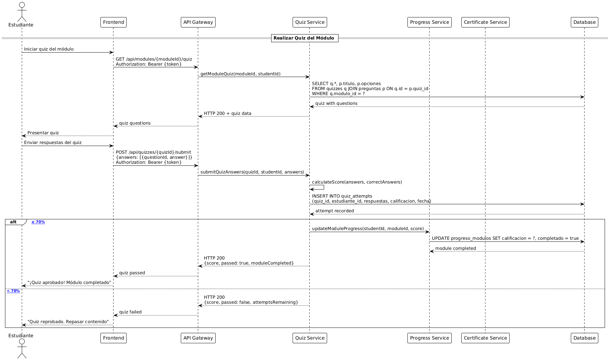

Plataforma de Gestión de Cursos Online
Sistema Integral de Educación Digital
S. Araujo, G. Lettieri, A. Morales, L. Núñez, F. Palacios, J. Sepúlveda
Profesor: Eugenio Alberto Bravo García
Asignatura: Ingeniería de Software
Ingeniería Informática - INACAP
Asignatura: Ingeniería de Software
Ingeniería Informática - INACAP
Jueves 2 de Octubre de 2025
Introducción
Visión del Proyecto
- Plataforma integral para gestión de cursos online
- Dirigida a estudiantes, docentes y administradores
- Objetivo: mejorar experiencia académica y optimizar gestión educativa
- Aplicación de prácticas modernas de ingeniería de software
Valor Agregado
- ü§ñ Inteligencia Artificial para resúmenes automáticos
- üìú Certificados digitales verificables con QR
- üìä Analytics y seguimiento en tiempo real
- üîí Seguridad enterprise y cumplimiento normativo

Stack Tecnológico
üêç
Django
Framework Backend
üêò
PostgreSQL
Base de Datos
⚛️
React
Frontend Framework
üé®
Tailwind CSS
UI Styling
üîê
JWT + OAuth
Autenticación
ü§ñ
OpenAI API
IA Resúmenes
☁️
AWS / Azure
Cloud Hosting
üîÑ
GitHub Actions
CI/CD Pipeline
üê≥
Docker
Containerización
üìä
Grafana
Monitoreo
üóÑÔ∏è
Redis
Caching
✅
Pytest + Jest
Testing
Arquitectura
- Patrón MVC: Separación clara de responsabilidades
- RESTful API: Comunicación frontend-backend
- Microservicios: Módulo IA independiente
- CDN: Distribución de contenido multimedia
Análisis del Contexto y Alcance
ü뮂Äçüéì
Estudiantes
- Inscripción a cursos
- Materiales multimedia
- Evaluaciones online
- Progreso en tiempo real
- Certificados QR
- Resúmenes IA
ü뮂Äçüè´
Docentes
- Creación de cursos
- Gestión de materiales
- Diseño de evaluaciones
- Seguimiento de alumnos
- Calificación automática
- Emisión certificados
ü뮂Äçüíº
Administradores
- Gestión de usuarios
- Control de roles
- Supervisión de cursos
- Reportes del sistema
- Configuración global
- Auditoría completa
Proceso de Cocreación
Marco Metodológico: Sanders y Stappers
Tres niveles de participación: Hacer, Decir, Usar
Participantes
- 8-12 Estudiantes (diferentes niveles académicos)
- 6-8 Docentes (diversas áreas disciplinares)
- 2-3 Administradores (coordinación académica)
Fases del Proceso
- Fase 1: Levantamiento de necesidades (entrevistas, mapeo)
- Fase 2: Co-diseño de soluciones (talleres, prototipos)
- Fase 3: Validación y refinamiento (testing, SUS)
Métricas de Validación
≥85%
Completitud Tareas
≥70
System Usability Scale
≥80%
Funcionalidades Validadas
Impacto en Diseño
- Navegación adaptativa según rol del usuario
- Dashboard personalizable por preferencias
- Autoguardado en evaluaciones
- Progreso visual con gamificación
Metodología y Planificación
Marco ágil Scrum
12 sprints | 101 tareas | 750 horas estimadas
Fase 1: Fundación (Sprints 1-4)
280h
14h/semana/persona
- Setup y arquitectura base
- Autenticación y roles RBAC
- CRUD cursos completo
- Sistema de evaluaciones
- Certificados QR verificables
Fase 2: Avanzadas (Sprints 5-8)
260h
13h/semana/persona
- Optimización móvil y PWA
- Accesibilidad WCAG 2.1 AA
- OAuth, 2FA, SSO
- IA: Resúmenes automáticos
- Observabilidad completa
Fase 3: Producción (Sprints 9-12)
210h
10.5h/semana/persona
- Optimización BD y caching
- Load testing 500+ usuarios
- Seguridad enterprise
- CI/CD completo
- UAT y release candidato
Requerimientos
Técnicas de Levantamiento
Entrevistas con usuarios clave, historias de usuario (HU), observación de plataformas similares
17 Requerimientos Funcionales
- RF1: Login con OAuth (Google/Microsoft)
- RF2-RF3: Gestión completa de cursos y materiales
- RF4: Inscripción con validación de cupos
- RF5: Visualización de progreso en tiempo real
- RF6: Evaluaciones automáticas
- RF7: Certificados QR verificables
- RF8: Sistema de notificaciones
- RF11: IA para resúmenes de clases
- RF12: Auditoría y logs completos
12 Requerimientos No Funcionales
- RNF1: Seguridad: HTTPS, hash Argon2
- RNF2: Disponibilidad: ≥99.5% mensual
- RNF3: Rendimiento: ≤3s respuesta (p95)
- RNF4: Usabilidad: Score ≥90 Lighthouse
- RNF7: Accesibilidad: WCAG 2.1 AA
- RNF8: Escalabilidad: 500 usuarios concurrentes
- RNF9: Backups automáticos diarios
- RNF10: Trazabilidad completa (RTM)
- RNF12: Observabilidad con métricas
Diagrama de Casos de Uso

Diagrama de Clases

Diagrama de Secuencia - Estudiante Realiza Quiz

Diagrama de Actividad - Flujo de Curso Online

Patrones de Diseño
üîî Observer
Sistema de Notificaciones
- Implementado con Señales Django
- Desacoplamiento total entre componentes
- Múltiples observadores por evento
- Alta extensibilidad y testabilidad
Ejemplo: Inscripción → Email + Actualización stats + Notificación push
üéØ Singleton
Configuración Global
- Managers de API, email, límites
- Instancia única compartida
- Consistencia en todo el sistema
- Control centralizado de recursos
Ejemplo: ConfigManager.get_instance().max_file_size
üè≠ Factory
Creación de Contenidos
- Tipos: PDF, video, quiz, enlaces
- Creación centralizada con validación
- Lógica específica por tipo de contenido
- Fácil extensión a nuevos formatos
Ejemplo: ContentFactory.create(type='video', data)
Justificación:
Simplicidad, mantenibilidad, extensibilidad y testabilidad del código
Estándares de Calidad
ISO/IEC 12207
Ciclo de Vida del Software
- Adquisición: Definición requerimientos
- Desarrollo: Metodología Scrum
- Operación: Monitoreo continuo
- Mantenimiento: Versionado semántico
- Suministro: Entrega incremental
ISO/IEC 25000 (SQuaRE)
Métricas Objetivas de Calidad
| Eficiencia | ≤2s latencia, <70% CPU |
| Confiabilidad | ≥99.5% uptime, >720h MTBF |
| Seguridad | 100% datos encriptados |
| Escalabilidad | 500+ usuarios concurrentes |
| Mantenibilidad | >70% cobertura tests |
Enfoque preventivo:
Calidad medida desde etapas tempranas del desarrollo
Matriz de Trazabilidad (RTM)
Coherencia RF/RNF ↔ UML ↔ Pruebas
Garantiza cobertura completa y trazabilidad bidireccional de todos los requerimientos
Ejemplos de Trazabilidad
| Req | Diagrama UML | Criterio |
|---|---|---|
| RF1 | Caso uso: Autenticarse | Login ≤10s |
| RF7 | Secuencia: Certificado | PDF QR ≤10s |
| RF11 | Caso uso: IA Material | Resumen generado |
| RNF8 | Diagrama despliegue | 500 usuarios ≤3s |
Beneficios del RTM
- Control de cobertura: Todos los requerimientos implementados
- Identificación de gaps: Detección temprana de faltantes
- Gestión de cambios: Impacto analizado
- Validación: Criterios de aceptación verificables
- Auditoría: Trazabilidad completa del proyecto
Métricas de Cobertura
100%
RF Mapeados
100%
RNF Validados
25
Diagramas UML
Análisis de Riesgos
Identificación de Riesgos
| ID | Descripción | Nivel |
|---|---|---|
| R1 | Fallas en autenticación | Crítico |
| R2 | Pérdida de datos académicos | Alto |
| R3 | Ataques de seguridad (SQLi, XSS) | Crítico |
| R4 | Baja adopción por usabilidad | Medio |
| R5 | Sobrecarga usuarios simultáneos | Alto |
| R6 | Caída del servidor principal | Medio |
| R7 | Retrasos en entrega | Bajo |
| R8 | Vulneración datos personales | Alto |
| R9 | Fallos verificación certificados QR | Bajo |
| R10 | Dependencia proveedores externos | Bajo |
| R11 | Errores tipográficos interfaz | Bajo |
| R12 | Incompatibilidad navegadores | Medio |
Medidas de Mitigación
Riesgos Críticos (R1, R3):
- Tokens JWT + pruebas de estrés
- Validación y sanitización de entradas
- Uso de ORM para prevenir SQLi
- Pruebas de penetración periódicas
Riesgos Altos (R2, R5, R8):
- Backups automatizados diarios
- Redundancia BD + replicación geográfica
- Load balancing + auto-scaling
- HTTPS obligatorio + RBAC estricto
- Encriptación end-to-end de datos sensibles
Riesgos Medios (R4, R6, R12):
- Testing de usabilidad con usuarios reales
- Infraestructura en nube con failover
- Testing cross-browser automatizado
Matriz 3x3 de Riesgos

Escalas de Evaluación
Probabilidad:
- Baja: < 10%
- Media: 10-50%
- Alta: > 50%
Impacto:
- Bajo: < 1 día de retraso
- Medio: 1-5 días
- Alto: > 5 días
Acciones Requeridas
- ● Bajo: Monitoreo rutinario
- ● Medio: Planes de contingencia
- ● Alto: Mitigación activa
- ● Crítico: Acción inmediata
Conclusiones
Integración Teoría-Práctica
- Aplicación práctica de Ingeniería de Software
- Metodologías ágiles: Scrum con 12 sprints
- Modelamiento completo con UML
- Patrones de diseño: Observer, Singleton, Factory
- Cumplimiento ISO/IEC 12207 y 25000
Resultados Cuantitativos
750h
Horas de Desarrollo
29
Requerimientos (17 RF + 12 RNF)
22
Diagramas UML
3
Patrones de Diseño
12
Riesgos Identificados
100%
Trazabilidad RTM
Solución Integral y Moderna
- Gestión completa: cursos, materiales, evaluaciones
- Certificados QR verificables en blockchain
- Valor agregado: IA para resúmenes automáticos
- Plataforma funcional, escalable y segura
- Alineada con necesidades académicas reales
Próximos Pasos
- Inicio de desarrollo: Sprint 1
- MVP funcional en 4 sprints (Fase 1)
- Release candidato: Sprint 12
- Evaluación continua con usuarios reales
¿Preguntas?
Muchas gracias por su atención